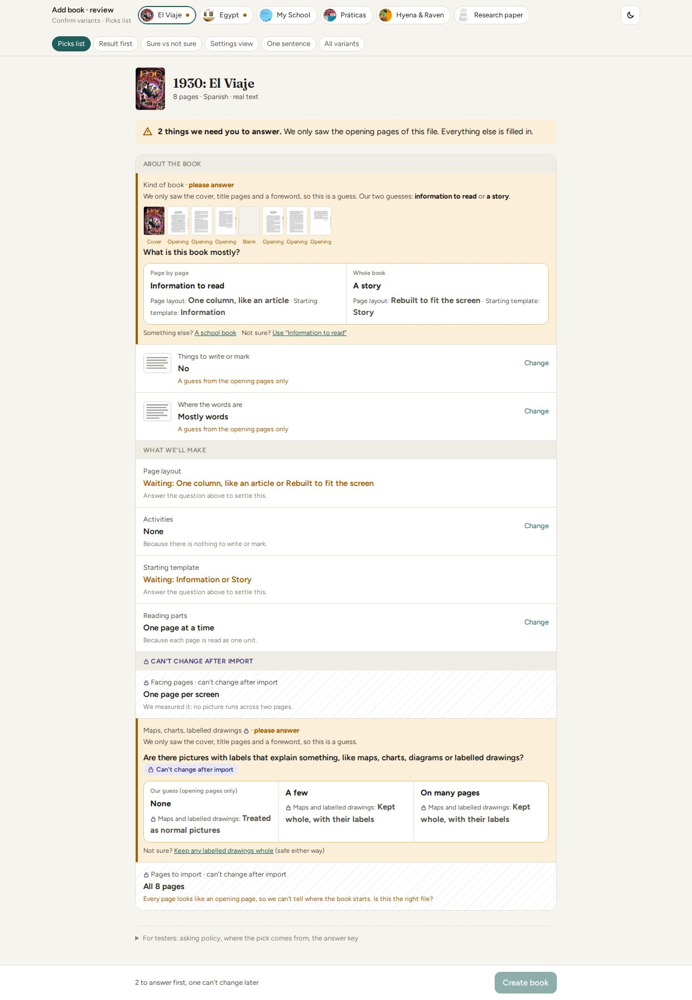
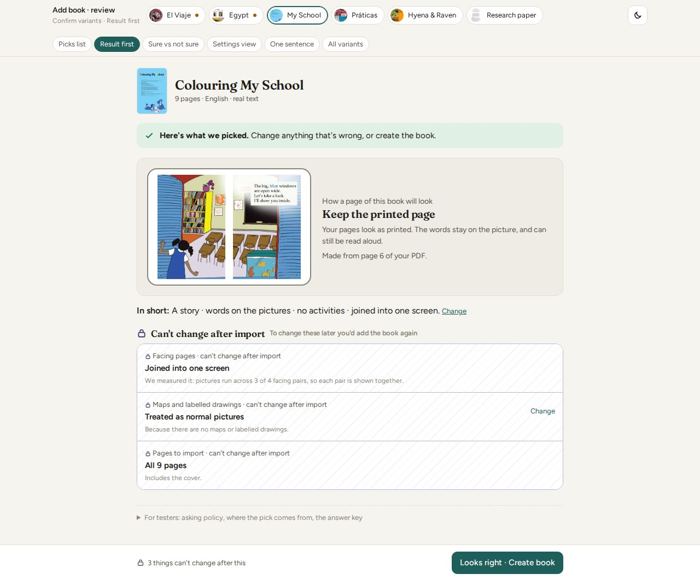
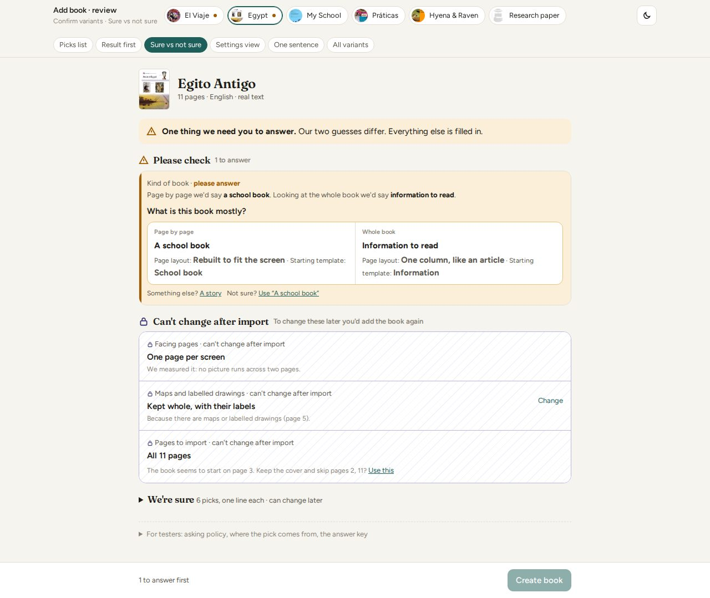
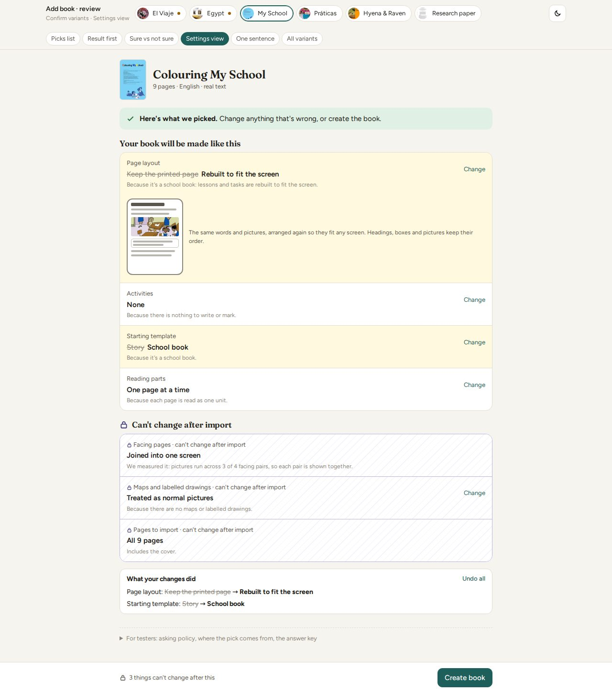
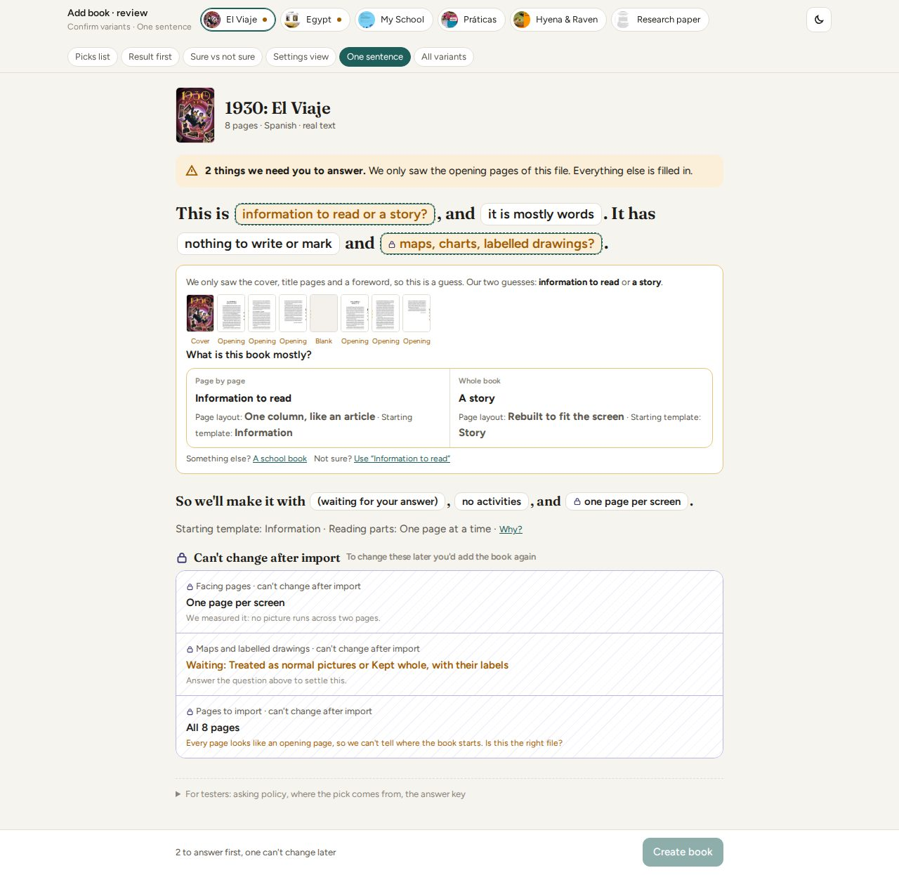

Add Book auto mode: review-screen variants
The product owner's idea: the AI runs, then shows what it picked; the user confirms or changes. Ask only if we need to. Five ways to show the same review, on the same six books, data, rules and plain words as round 3 (all prototypes). A book with no needed question reaches Create in one click (“Looks right · Create book”). Changing a pick shows which settings flip, with locked ones marked.
El Viaje shows the whole-book reading as the AI's pick (src=whole), where it is wrong (“information to read”). The tester box at the bottom of each screen switches the asking policy (P0–P4) and the pick's source. Default policy: P2. Numbers: results/poc/confirm-policies.json, discussion/confirm-variants.md.

Picks list
Tests: Do people review a single list of facts and settings, with needed questions as an inline toggle row, faster than a step-by-step card?


Screenshots in v-picks-list/shots/.

Result first
Tests: Does a preview of a real middle page in the chosen layout, plus a one-line summary, make people catch a wrong pick without reading the list?


Screenshots in v-result-first/shots/.

Sure vs not sure
Tests: Does splitting picks into “Please check” (open) and “We're sure” (one line each, collapsed), with the locked group always visible, focus attention where errors are?


Screenshots in v-sure-unsure/shots/.

Settings view
Tests: Do people prefer to review the 6 resulting settings (each with “because …”) rather than the facts? Changing a setting shows which fact it implies.


Screenshots in v-settings/shots/.

One sentence (mine)
Tests: Is one editable sentence (“This is [a story], and [the words are next to the pictures]…”) quicker to scan than a list? Needed picks are dashed blanks.


Screenshots in v-sentence/shots/.
| Policy (E5 pick / E4 check, 54 run pairs) | Questions per book | Wrong settings at Create, unasked | Wrong picks that matter shown as sure |
|---|---|---|---|
| P0 never ask | 0 | 18 in 9/54 pairs (0 locked) | 9 |
| P1 ask when guesses differ and it matters | 0.39 (max 1) | 0 | 0 |
| P2 P1 + only opening pages read | 0.72 (max 3) | 0 | 0 |
| P3 P2 + always ask maps (locked) | 1.22 (max 3) | 0 | 0 |
| P4 ask only locked, highlight the rest | 0.17 (max 1) | 18 in 9/54 pairs, all in highlighted rows | 0 |
Rebuild: python3 prototypes/_build/build.py, shots: node prototypes/_build/shots-confirm.mjs.